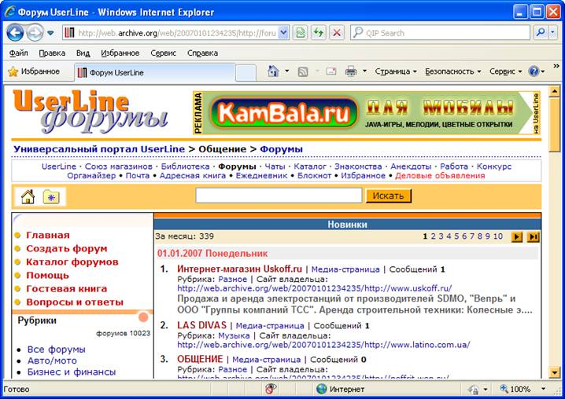

Основы сетевого взаимодействия
Пользователи сети имеют возможность принимать участие в различных формах коллективного взаимодействия — телеконференциях, форумах, чатах, социальных сетях. Телеконференция — это система обмена информацией на определённую тему между пользователями сети. Она не ограничена временем и может продолжаться месяцами и годами. Сначала в компьютерной сети объявляется открытие конференции на определённую тему. Телеконференция получает свой электронный адрес. Затем проводится подписка на участие в данной телеконференции. После этого каждый пользователь, подписавшийся на конференцию, получает все её материалы в свой почтовый ящик. В свою очередь, посылая письмо в адрес конференции, пользователь знает, что оно дойдёт до всех её участников. Большинство конференций регулируются модераторами — участниками, в обязанности которых входит просмотр посланий и вынесение решений — публиковать данные послания (рассылать всем участникам конференции) или нет.  Для организации общения посетителей веб-сайта организуются веб-форумы. Форум предлагает набор разделов для обсуждения. Зарегистрированные на сайте пользователи, посылая свои сообщения, могут создавать внутри разделов темы и вести обсуждения в рамках этих тем. Сообщение и все ответы на него образуют «ветку» форума. Незарегистрированные пользователи получают статус гостей, которые могут просматривать ветки форума, но не имеют права принимать участие в обсуждениях. За соблюдением правил следят модераторы, имеющие право редактировать, перемещать и удалять сообщения в определённом разделе или теме. Чат (англ. chat — болтать) — сервис группового общения, предполагающего обмен сообщениями по компьютерной сети в режиме реального времени. Характерной особенностью является коммуникация именно в реальном времени, что отличает чат от форума. В последнее время среди пользователей Интернета широкое распространение получили социальные сети — интерактивные многопользовательские веб-сайты, содержание (контент) которых создаётся самими участниками сети. Такие сайты представляют собой автоматизированные социальные среды, позволяющие общаться группам пользователей, объединённых общими интересами.